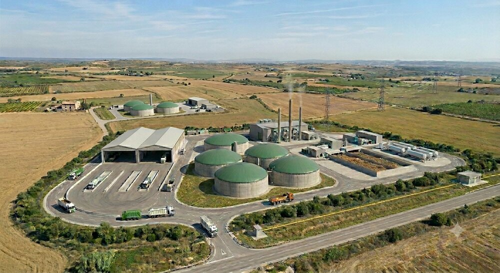

0 entitats i institucions adherides al nostre manifest
Carregant...
Sió Viu està adherit al Manifest de la Plataforma Pobles Vius

Tarroja de Segarra, la Prenyanosa i els pobles veïns conformen un entorn rural singular. Paisatges de secà vius i canviants amb les estacions, camps que parlen de la nostra història i un teixit humà fort que manté vius aquests petits nuclis que són casa nostra.
El projecte consisteix en la construcció de dues plantes de dimensions industrials dissenyades per rebre, emmagatzemar i tractar grans volums de residus (habitualment residus ramaders, agrícoles, restes d'escorxadors, cadàvers d'animals, fangs de depuradora, aigües residuals i fangs industrials) amb l'objectiu de produir gas.
Es planifica col·locar-les a menys d'1,5 quilòmetres dels nuclis urbans de Tarroja de Segarra i la Prenyanosa, tot i que el vent i les possibles filtracions poden fer arribar pudors i contaminants molt més lluny afectant a més pobles de la zona com Malgrat, Castellnou, La Cardosa, Sedó...

Recreació del projecte, generada amb IA
L'evidència i els estudis en zones afectades adverteixen de la dispersió de bioaerosols carregats de bacteris, fongs i virus, que poden propagar-se a quilòmetres de distància. L'exposició a aquestes partícules i a gasos nocius que generen aquestes instal·lacions incrementa el risc d'infeccions respiratòries, al·lèrgies cròniques i d'altres malalties.
Projectes d'aquesta magnitud es tradueixen en pudors insuportables, sorolls constants i trànsit diari de desenes de camions pesants per les nostres carreteres. Més perill a la xarxa viària, més emissions de CO2...
Una macroplanta de biogàs no és un projecte d'energia verda; és una amenaça directa als recursos naturals de la zona. Elevat consum d'aigua, risc de filtracions, contaminació d'aqüífers i abocament massiu de digestat (residu) que pot provocar pèrdua de fertilitat dels camps i la saturació del sòl.
Defensem la nostra manera de viure i el nostre entorn. Aquests macroprojectes transformaran irreversiblement el paisatge de la Segarra, degradant el seu valor natural i identitari. Provocarà una devaluació econòmica de les propietats, sentenciarà el turisme rural i els projectes locals, i accelerarà el despoblament de la zona.
Aturar aquests projectes és una batalla legal que requereix recursos i assessorament tècnic.
Per respondre amb la màxima fermesa jurídica ens cal la força de la gent.
Ens financem exclusivament amb la transparència de les aportacions veïnals dels associats i donacions.
Cada aportació, cada nou soci/a és de gran ajuda.
Amb una quota anual mínima (0,33 €/dia) ajudes a mantenir l'estructura de la plataforma de forma permanent.
Click aquí per associar-teCompte: ES81 3130 0001 9500 2044 3300
Click aquí per fer una donacióAdhereix-te al manifest com a col·lectiu compromès amb la comarca.
Click aquí per adherir-te
GRANS FONS D'INVERSIONS VOLEN CONVERTIR ELS NOSTRES POBLES EN ABOCADORS,
ELLS TENEN ELS DINERS, NOSALTRES EL SUPORT DE LA GENT
Carregant...
Sió Viu està adherit al Manifest de la Plataforma Pobles Vius